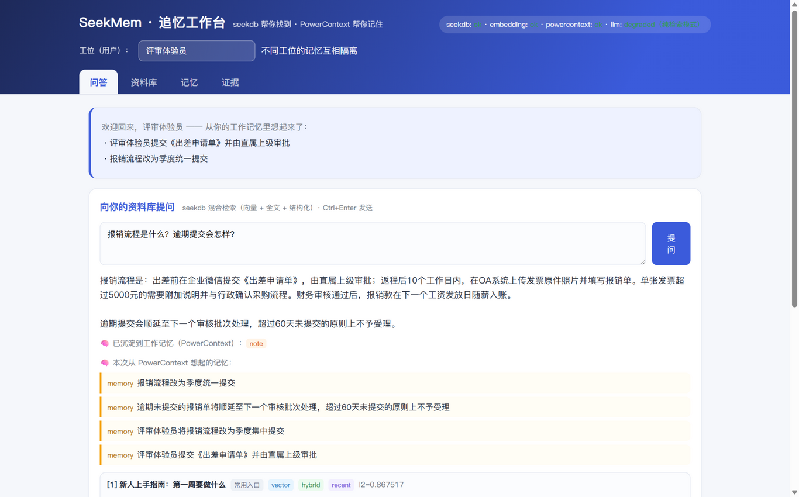
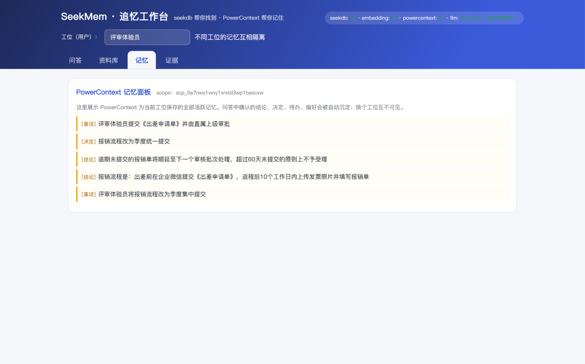
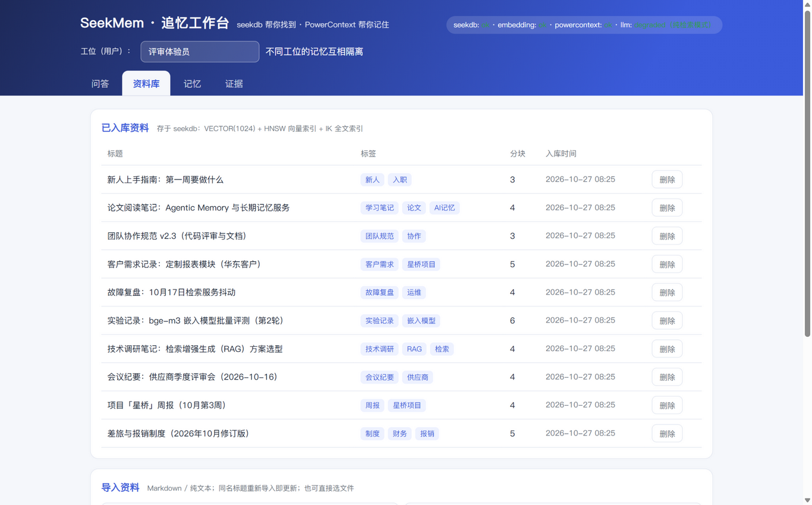
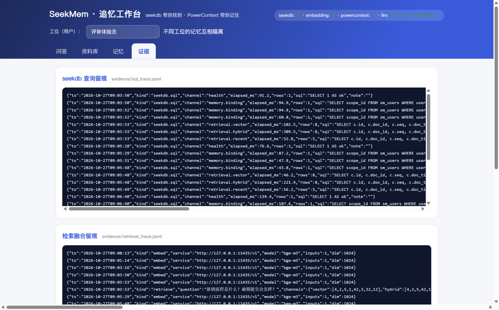

解决什么问题
找不到。资料散落在笔记、周报、会议纪要、实验记录里。字面搜索搜不到语义相关的内容——搜"报销怎么走"，找不到写着"财务审核流程"的文档。SeekMem 把资料导入 seekdb，用向量 + IK 全文 + 结构化条件的混合检索（单条 SQL 完成）把相关段落带出处找回来。
接不上。第二天回来，忘了上次进行到哪、定了什么，每次都要从零交代背景。SeekMem 为每个工位（用户）在 PowerContext 里维护独立记忆：事项、结论、偏好自动沉淀，跨会话"想起来"并注入后续回答；工位之间互相隔离。
核心功能
1
资料库
Markdown/文本导入 → 按标题智能分块 → bge-m3 向量化 → 存入 seekdb（VECTOR(1024) HNSW 向量索引 + IK 全文索引 + 结构化列，一表三类检索维度）。
2
混合检索问答
三路召回（纯向量 / 单语句混合检索 / 最近资料）+ RRF 融合 → LLM 综合回答带 [n] 引用；每条引用标注命中通道与 l2 距离。
3
工位记忆（PowerContext）
每轮自动提炼 0-2 条记忆（note/decision/task/preference）写入对应 scope；下次打开欢迎横幅"想起来了"，回答自动带上你的背景。
4
证据留痕
每次 seekdb SQL、检索融合、记忆读写、问答轮次逐条写入 evidence/*.jsonl 并在工作台「证据」页可视化——技术是否实际起作用，看留痕不靠口说。
实际运行效果（2026-10-27 实测截图）
以下截图来自本机运行的工作台（10 篇种子资料已入库，LLM 为本地 qwen2.5-3B）。




seekdb 与 PowerContext 的分工
| 组件 | 在项目中的实际作用（非安装点缀） | 如何核对 |
|---|---|---|
| seekdb 数据与检索 | 全部资料存于 sm_chunks 单表（向量+全文+结构化三维度）；每次提问并行执行三条 SQL：纯向量 ORDER BY l2_distance(...) APPROXIMATE、单语句混合 WHERE MATCH(content) AGAINST(?) ORDER BY l2_distance(...) APPROXIMATE、结构化 ORDER BY created_at DESC，RRF 融合后进回答 | 「证据」页 seekdb 查询留痕（sql_trace.jsonl）；引用的通道徽章 |
| PowerContext 记忆与上下文 | 每工位一个 scope；每轮 LLM 提炼 0-2 条记忆 POST /v1/memory/remember 写入；下轮 POST /v1/memory/search 召回注入回答与欢迎横幅；「记忆」页 entries/list 全量可视化 | 记忆读写留痕（memory_trace.jsonl，含 entry_id）；跨会话样例（日期只在记忆里，资料里没有） |
为什么两个都要：资料是"可检索的公共事实"（要出处/排序/过滤），记忆是"跟人走的上下文"（要隔离/版本/想起）。用 seekdb 手搓记忆等于重写记忆服务，用 PowerContext 存资料则丢掉混合检索——各在其位。
验证结果
- scripts/verify_demo.py 一键复跑 7/7 通过：健康检查、检索命中正确文档、单语句混合检索 SQL 生效、记忆写入、跨会话记忆召回并用于回答、工位隔离、SQL 留痕。
- 无 LLM 降级模式实测：检索与引用正常，seekdb/PowerContext 功能不受影响（evidence/degraded_mode_test.txt）。
- 多工位隔离实测：不同 scope 记忆互不可见（evidence/scope_isolation_test.txt）。
常见问题
seekdb 连不上？先确认 2881 端口与账号密码（SEEKDB_* 环境变量）。seekdb 首次启动要先 bootstrap，约需 1-2 分钟，这段时间连接失败属正常现象。
入库报 503「embedding 不可用」？嵌入服务没启动，或返回维度与 EMBED_DIM 不一致。注意：换嵌入模型必须清空重建（删除 seekmem 库重新 seed），否则新旧向量不在同一空间、检索会失真。
PowerContext 健康检查显示 degraded？/health/ready 里 inference.embedding 超时通常是嵌入服务没起。此时记忆的语义检索会退化，但 remember / entries 仍可用。
LLM 回答很慢？本地 3B 模型在 CPU 上约 30-90 秒/次，云端 API 则秒级。生成期间可以切到其他页签；完全不接 LLM 也能跑，问答会自动降级为纯检索摘要。
代码与复现
完整源码（应用 + 运行手册 + 验证样例 + 实测留档）在大赛仓库 powercontext 的 2026-competition-ecosystem 基线上：qoder/ 目录，分支 crq-ecosystem。
git clone https://github.com/yanayana-1-dev/powercontext.git cd powercontext && git checkout crq-ecosystem # 部署 seekdb / PowerContext / 嵌入服务 → 见 qoder/docs/RUNBOOK.md（约 30-60 分钟） cd qoder/app && pip install -r requirements.txt uvicorn main:app --host 0.0.0.0 --port 9100 python ../scripts/seed.py # 导入种子资料 python ../scripts/verify_demo.py # 四步验证一键复跑